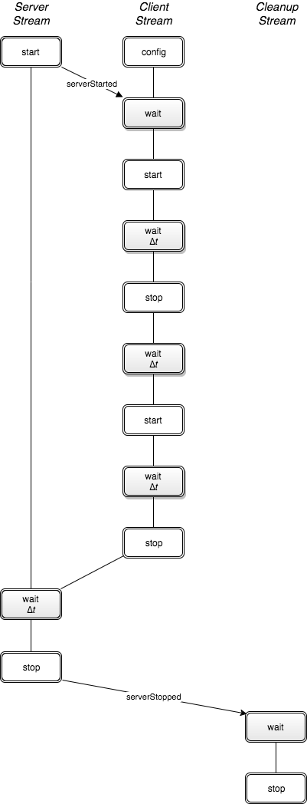
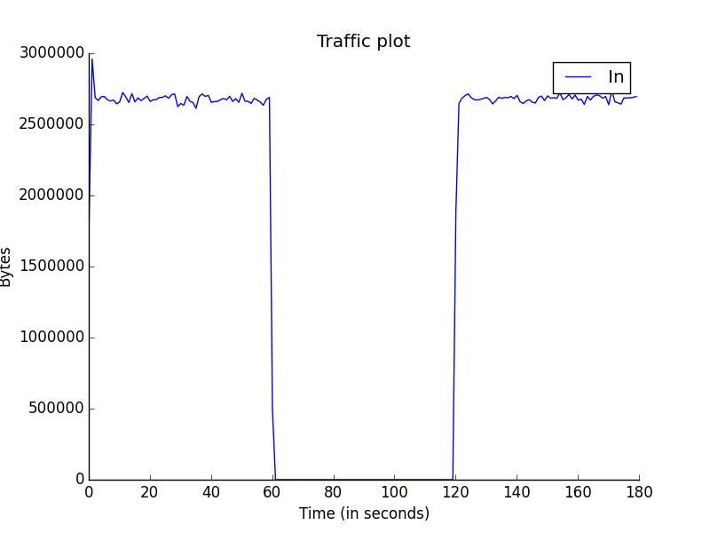

Flooder Case Study
In this experiment we demonstrate how one can setup a flooding agent and a victim server.
We demonstrate three aspects of MAGI:
- Specifying multiple event streams,
- Synchronizing with triggers, and
- A special target called
exitto unload agents.
Event Streams
This experiment has three streams: the flooder stream, the server stream, and the cleanup stream.
The co-ordination between the events can be illustrated as follows:

Event streams can be synchronized using event-based triggers or time-based triggers.
The triggers are indicated as wait states in gray. The group formation and loading the agents, which is also automated by the orchestrator tool, is not illustrated above.
Server Stream
The server event stream consists of three states. The start state which generates a trigger, called serverStarted, once the server agent is activated on the experiment nodes.
It then enters the wait state and stays there for a period ∆t and terminates the server agent in stop state.
The AAL description is below:
serverstream:
- type: event
agent: server_agent
method: startServer
trigger: serverStarted
args: {}
- type: trigger
triggers: [ { timeout: 180000 } ]
- type: event
agent: server_agent
method: stopServer
trigger: serverStopped
args: {}
Flooder Stream
The flooder stream consists of five states. First, the flooder agent implementation is parameterized by the configuration state. This occurs as part of the agent loading process.
The flooder stream then synchronizes with the server stream by waiting for the serverStarted trigger from the server nodes. Once it receives the trigger the flooder agent is activated in the start state.
Next, the flooder stream waits for a period of ∆t before repeating the start and stop events one more time while waiting for a period of ∆t in between. Finally, the flooder stream terminates the flooder agent in the stop state.
The AAL description is as follows:
flooderstream:
- type: event
agent: flooder_agent
method: setConfiguration
args:
dst: '10.1.1.3'
proto: 'udp'
length: 'minmax(64, 1024)'
ratetype: 'flat'
highrate: '5000'
lowrate: '5000'
sport: 'minmax(1024, 4096)'
dport: 'minmax(1024, 4096)'
- type: trigger
triggers: [ { event: serverStarted } ]
- type: event
agent: flooder_agent
method: startFlood
args: {}
- type: trigger
triggers: [ { timeout: 60000 } ]
- type: event
agent: flooder_agent
method: stopFlood
args: {}
- type: trigger
triggers: [ { timeout: 60000 } ]
- type: event
agent: flooder_agent
method: startFlood
args: {}
- type: trigger
triggers: [ { timeout: 60000 } ]
- type: event
agent: flooder_agent
method: stopFlood
args: {}
Cleanup Stream
The last event stream, the cleanup stream consists of two states. First, it waits for the server to stop and then it enters the exit state.
The exit state unload and tears down all the comminucation mechanisms between the agents. The exit state is entered by the key target is used to transfer control to a reserved state internal to the orchestrator.
It causes the orchestrator to send agent unload and disband group messages to all the experiment node and then it exits the orchestrator.
cleanupstream:
- type: trigger
triggers: [ {event: serverStopped, target: exit} ]
Running the experiment
- Swap in the experiment using the network description file given below.
- Set up your environment. Assuming your experiment is named myExp, your DETER project is myProj, and the AAL file is called procedure.aal.
$ export PROJ=myExp
$ export EXP=myProj
$ export AAL=procedure.aal
- Once the experiment is swapped in, run the orchestrator, giving it the AAL above. The orchestrator needs an AAL file, and the experiment and project name. The example output below uses the project “montage” with experiment “caseClientServer”.
$ /share/magi/current/magi_orchestrator.py --experiment $EXP --project $PROJ --events $AAL
Once run, you will see the orchestrator step through the events in the AAL file. The output will be as follows:
stream groupBuildS... : sent : (16:17:14) joinGroup flooder_group --> __ALL__
stream groupBuildS... : sent : (16:17:14) joinGroup server_group --> __ALL__
stream groupBuildS... : trig : (16:17:15) trigger completed: GroupBuildDone: {'group': 'flooder_group'}
stream groupBuildS... : trig : (16:17:15) trigger completed: GroupBuildDone: {'group': 'server_group'}
stream groupBuildS... : sent : (16:17:15) groupPing(['flooder_group']) --> flooder_group
stream groupBuildS... : sent : (16:17:15) groupPing(['server_group']) --> server_group
stream groupBuildS... : trig : (16:17:15) trigger completed: GroupPong: {'group': 'flooder_group'}
stream groupBuildS... : trig : (16:17:15) trigger completed: GroupPong: {'group': 'server_group'}
stream groupBuildS... : DONE : (16:17:15) complete.
stream loadAgentSt... : sent : (16:17:15) loadAgent flooder_agent --> flooder_group
stream loadAgentSt... : sent : (16:17:15) loadAgent server_agent --> server_group
stream loadAgentSt... : trig : (16:17:27) trigger completed: AgentLoadDone: {'agent': 'flooder_agent'}
stream loadAgentSt... : trig : (16:18:03) trigger completed: AgentLoadDone: {'agent': 'server_agent'}
stream loadAgentSt... : DONE : (16:18:03) complete.
04-24 16:18:03.371 magi.orchestrator.orchestrator INFO Running Event Streams
stream flooderstream : sent : (16:18:03) setConfiguration(['udp', '10.1.1.3', ... ) --> flooder_group
stream serverstream : sent : (16:18:03) startServer(None) --> server_group (fires trigger: serverStarted)
stream flooderstream : trig : (16:18:05) trigger completed: serverStarted: {'retVal': True}
stream flooderstream : sent : (16:18:05) startFlood(None) --> flooder_group
04-24 16:18:05.624 magi.orchestrator.orchestrator CRITICAL Got a runtime exception from an agent. Jumping to exit target.
stream unknown : exit : (16:18:05) Run-time exception in agent <magi.modules.flooder_agent_code.flooder.flooder_agent object at 0x7f47e2243490> on node(s) floodernode in method _execute_child, line 1343, in file subprocess.py. Error: [Errno 2] No such file or directory
04-24 16:18:05.625 magi.orchestrator.orchestrator INFO Running Exit Streams
stream unloadAgent... : sent : (16:18:05) unloadAgent flooder_agent --> flooder_group
stream unloadAgent... : sent : (16:18:05) unloadAgent server_agent --> server_group
stream unloadAgent... : trig : (16:18:06) trigger completed: AgentUnloadDone: {'agent': 'flooder_agent'}
stream unloadAgent... : trig : (16:18:06) trigger completed: AgentUnloadDone: {'agent': 'server_agent'}
stream unloadAgent... : DONE : (16:18:06) complete.
stream groupLeaveS... : sent : (16:18:06) leaveGroup flooder_group --> __ALL__
stream groupLeaveS... : sent : (16:18:06) leaveGroup server_group --> __ALL__
stream groupLeaveS... : trig : (16:18:06) trigger completed: GroupTeardownDone: {'group': 'flooder_group'}
stream groupLeaveS... : trig : (16:18:06) trigger completed: GroupTeardownDone: {'group': 'server_group'}
stream groupLeaveS... : DONE : (16:18:06) complete.
The orchestration tool runs an internally defined stream called initilization that is responsible for establishing the server_group and the flooder_group and loading the agents. Once the agents are loaded, as indicated by the received trigger AgentLoadDone, The initialization stream is complete.
Now the serverstream, flooderstream and the cleanupstream start concurrently. The serverstream sends the startServer event to the server_group. All members of the server_group start the server and fire a trigger serverStarted.
The flooderstream on receiving the trigger serverStarted from the server_group, sends the startFlood event to the flooder_group. One minute later, the clientstream sends the trigger stopFlood to the flooder_group. This sequence of events repeats one more time before sending the final stopFlood trigger to the flooder_group, terminating the flooder_agent.
Once the serverstream finishes the wait period, it sends out stopServer on the server_group. Once all the servers are stopped, the members of the server_group respond with a serverStopped trigger, which is forwarded to the cleanupstream.
The procedure and topology file that were used for the casestudy are attached below.
Procedure: casestudy_flooder.aal
Topology : casestudy_flooder.tcl
Archived logs: casestudy_flooder.tar.gz
Visualizing Experiment Results
In order to visulaize the traffic on the network, we modify the above mentioned procedure to add another stream called “monitor”. This stream deploys a packet sensor agent on the server node to measure the traffic on the link in the experiment. The packet sensor agent records the traffic data using MAGI’s data management layer.
monitor_group: [servernode]
monitor_agent:
group: monitor_group
path: /share/magi/modules/pktcounters/pktCountersAgent.tar.gz
execargs: {}
monitorstream:
- type: trigger
triggers: [ { event: serverStarted } ]
- type: event
agent: monitor_agent
method: startCollection
trigger: collectionServer
args: {}
- type: trigger
triggers: [ { event: serverStopped } ]
- type: event
agent: monitor_agent
method: stopCollection
args: {}
The recorded data is then pulled out by the below mentioned tools to create a traffic plot.
In order to populate the traffic data, re-orchestrate the experiment using the updated procedure. The updated procedure file and the corresponding logs are attached below.
A plot of the traffic on the link containing the flooder and the victim server can be generated by the MAGI Graph Creation Tool.
$ export GRAPHCONF=graph.conf
$ /share/magi/current/magi_graph.py -e $EXP -p $PROJ -c $GRAPHCONF -o traffic_plot.png

Procedure : flooder_monitor.aal
Archived logs: casestudy_flooder_monitor.tar.gz
Graph Config: graph.conf